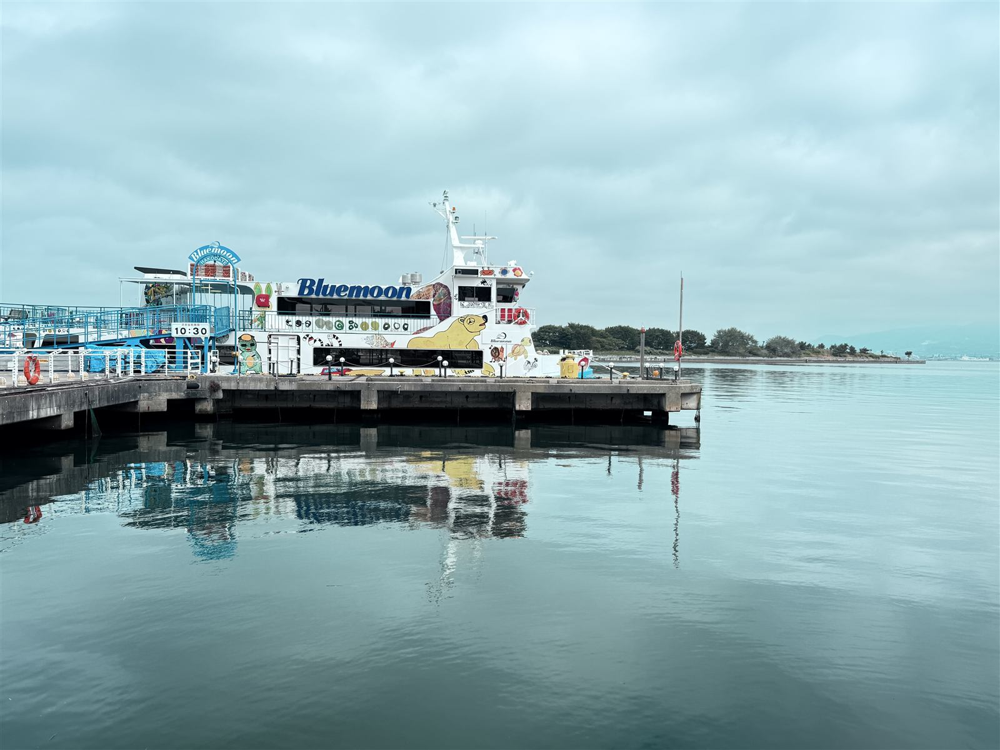

旅行
函館への旅
2026年8月5日〜7日

8月5日〜7日（令和8年）にかけて函館に行ってきました。
8月5日 友人が新函館北斗駅まで迎えに来てくれました。函館に戻る途中、七飯町（私が中学生と高校生の時に住んでいた街です）に立ち寄り、駅の近くの雰囲気の良い喫茶店で旧交を温めました。彼は詩吟の師範でもあり、函館を拠点に生活をしています。中学生のころからの友人です。
8月6日 午前中は、大手町・末広町・元町を散策し、函館西高校まで歩きました。そこで海のほうに向かって写真を撮り、素晴らしい景色をスマホに収めました。午後からは、友人と函館山のふもとにある喫茶店で談笑しました。函館山の麓には、落ち着いた雰囲気の喫茶店が何軒もありました。友人の妹さんのところにもお邪魔し、世間話をして楽しいひとときを過ごすことができました。
8月7日 午前中は、函館駅構内の1階でお土産を買い、2階の喫茶店で新聞を読んだりネット検索をしたりして過ごしました。午後からは、友人の車で函館から七飯町、そして北斗市へとあちこち移動し、昔の思い出が蘇りました。
友人のおかげで、快適に3日間の旅を終えることができました。